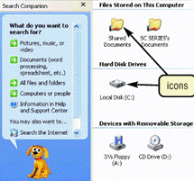

What is a computer? It's always nice to have a mental picture, so I think of a computer as an information processor, like Cuisinart for words and numbers and ideas.
Instead of vegetables, we feed a computer data; the raw facts figures and symbols we have to work with. The computer uses programs stored in memory to turn that data into information; data that's organized, meaningful and useful. (If the data contains errors, then the information won't be useful; that's GIGO: Garbage IN; Garbage OUT).
The three steps that your computer goes through to turn data into information is called the information processing cycle:
- Input : retrieving the data to work on.
- Processing : analyzing, organizing and transforming the input.
- Output : displaying the results of the calculations or sending them on to the next step in the process.
A computer system uses hardware, (the physical parts of your computer), and software (the programs used by the hardware), to carry out these steps.
Input and Output
An input device is a piece of hardware that's used to:
- to enter data, such as the text in a letter, or the numbers in your checkbook,
- or commands for the computer to perform.
Input devices include:
- keyboards, used to enter both instructions and data
- mice, trackballs and touchpads which are often used to issue instructions, but which can be a source of data as well
- joysticks and other gaming controllers
- graphics tablets, used for free-hand drawing input by artists
- various kinds of touch screens like those found on your phone or tablet
Other input devices include digital cameras, both still and video, microphones to record sound, and scanners, which can digitize photographs, or which can be used to convert printed text to a form usable in a word processor (OCR).
If input devices give you a way to talk to your computer, then output devices let your computer "talk back". An output device is a piece of hardware that the computer uses to display information. The most common output device is the one you're looking at right now: your computer's screen, or monitor.
Of course, if you reading these lessons off of the printed page, then you're making use of the other major output device, the printer, which is used to produce hard-copy.
Not all output is visual; your computer is equally adept at producing audio output using speakers or earbuds.
The System Unit
We've got input, we've got output, but where's the computer? Where does the processing take place? The computer itself is usually located in the system unit, often described as "the box-like case containing the electronic components used to run programs and process data".
The "box-like case" part describes most IBM-compatible PCs. Not all systems look like boxes, though;
the original Apple iMacs, for instance,
had their system unit combined with the monitor like the picture on the left, while the second-generation iMacs
had a "mushroom like", rather than "box-like" case, like the picture on the right. The latest iMacs use a
all-in-one flat-panel combined monitor/system-unit design.
On a laptop computer, you'll usually find the system unit beneath the computer's keyboard. On a tablet, it is behind the screen. In any event, the important thing to remember is that the system unit contains the "real" computer itself.
The CPU and Memory
While the system unit itself is filled with hundreds of different components, the two main parts of the "computer itself" are:
- the Central Processing Unit or CPU
- memory
The CPU is the "brain" of the computer, the part that actually does calculations, the part that "plays" the programs you load. When you run a program, its instructions are carried out by the CPU.
However, the CPU can only execute a handful of instructions at any given time; the rest of the instructions, (along with that French paper you're writing), are stored in a portion of the System Unit called memory.
Memory, (usually called RAM, or Random Access Memory), is a temporary holding place for data and instructions, used only while your program is running. This is an important and fundamental concept: the CPU cannot act on instructions or data stored on a CD or a hard disk; instead, all data and all instructions must be loaded into memory, where it can then be accessed by the CPU.
The word temporary is also a fundamental concept. All data and all instructions in memory are retained only while your computer is "powered up". When you turn off the power to your computer, all the work you've done on "Balzac versus Bluto" is completely erased.
Secondary Storage
Primary storage refers to dynamic memory, which we just discussed. Secondary storage consists of two parts:
- storage media where your data is actually stored
- a storage device, the piece of hardware that records or retrieves your data
These two parts are tightly linked: if you use a CDR as your storage media, then you must use a CD Recorder as your storage device—you can't read or write your CD using the floppy disk drive, for instance.
Mechanical Hard Drives
The hard disk is the main form of secondary storage used by today's desktop computers and laptops.
To picture a hard disk, imagine a stack of pancakes. Now, imagine that each pancake is a rigid metal platter, coated on both sides with magnetic media, and mounted on a rapidly turning spindle. That's the hard drive, which is usually located inside the system unit.
Hard drives have two advantages over all other storage media:
- they have very large capacity; even the least expensive consumer-level PCs shipping today has at least a 500 GB (Gigabyte) drive, with 1 and 2 TB (Terabyte) drives very common.
- Hard disks are also very, very fast, which means that programs and data are loaded and stored quickly, compared to running from a removable drive.
Solid State Disks
Most lightweight laptop computers now come with SSD or Solid State Disk drives instead of mechanical, magnetic-platter-based hard drives. SSD drives have the advantages of less weight and no moving parts; while currently more expensive and with somewhat lower performance than mechanical drives.
Memory and Data Representation
Before you can really understand how memory or your CPU works, you need to understand a little bit about how instructions and data are stored in the computer.
Transistors, the basic building block of all integrated circuits, have only two states, like a light switch. A transistor, at any given time is either on, meaning that it can act as a pathway for an electrical circuit, or off, meaning that it won't conduct electricity.
Because of this on/off characteristic, each transistor in
memory or on a CPU can be used to store a single
binary number with one of the two
values 0 (if the transistor is off) or
1 (if the transistor is on). We call this
single transistor, that stores one binary number, a
bit or binary digit.
Of course, by itself, a single bit is not very useful, but, when combined with other bits, they can be used to represent more things like decimal numbers, text, images, sounds, and even program instructions.
Almost all computers today, work with groups of eight bits, called a byte, (b-y-t-e, not b-i-t-e). For what it's worth, a group of four bits, or half a byte, is called a nybble, also with a y instead of an i.
When treated as a binary number, a single byte can store 256 different values, and, as mentioned, those values can be interpreted as numbers, characters, images, or instructions. This translation between the raw byte values stored in memory and the meaning that we assign to those bytes is known as its data type.
Physical Memory
When a computer runs, both the instructions that it carries out, and the data that it processes are stored in memory. Memory is simply a particular kind of integrated circuit, mounted on a circuit board called a memory module.
The picture shown here is a DIMM or Dual Inline Memory Module, which has chips mounted on both sides of the circuit board. The memory module fits into a special slot on the motherboard called a memory slot.
The key to understanding how memory works is to realize that it is addressable; each byte of memory in your computer has its own unique location, which is called its address. Because of this addressability, when your program runs, the CPU can say things like: "add the two numbers located at the addresses 120 and 122", or "execute the instruction you'll find in memory at address 1000".
Random Access
Usually when we talk about a computer's memory, we are referring to Random Access Memory or RAM. When we say "my computer has 8 Gigabytes of memory" we are referring to the amount of RAM the computer has. This kind of memory is also called main memory or primary storage.
There are two important things you need to understand about RAM:
- First, RAM is read/write memory; it can be changed by the CPU as your program runs. RAM is where your letters are stored while you are typing them, and where different programs are loaded as you use your computer. Since it is read/write memory, its contents aren't fixed.
- Second, RAM is volatile. That means it only retains the data you store as long as the computer is turned on. Once you turn the power off, your data is lost. That's why secondary storage devices such as disk drives are so important.
There is one small problem with the word "megabyte" (and, by extension, with the terms gigabyte and terabyte). Is a megabyte 1024 x 1024 bytes, that is 1,048,576, or does it mean exactly 1 million. That depends on who you ask. The store selling you a new hard drive uses the 1 million figure, since it makes the drives look larger.
To rectify this confusion, the terms "kibibyte", "mebibyte", "gibibyte" and "tebibyte" have been introduced to specifically mean the 1024 based units. Wikipedia has an article that explains these different terms, which haven't really caught on all that much. You don't need to memorize the exact sizes, but you should know that terms like "megabyte" can be a little fluid, depending on who is using them, and in what context.
Text and Memory
Most of us use characters much more often than numbers. Characters, and groups of characters, (sentences, paragraphs, chapters, books, libraries), form the basis for human language and, arguably, civilization.
The first computer applications were, interestingly enough, all about words, specifically the secret codes used during World War II. The first research into "computing" as we know it was carried out by the mathematician, Dr. Alan Turing, and his colleagues at Blechley Park in England, where they built Collosus, a code-breaking computer designed to break Germany's Enigma cipher.
Once the war was over, however, computers moved out of the
academic and espionage communities and into the corporate
arena, where they were seen as glorified accounting machines.
It wouldn't be until the 1970s, with the Wang word processor,
that businesses realized that computers could deal with words
as well as numbers.
How Characters Are Stored
The problem with storing characters in a computer is that, to put it bluntly, you can't. Computers can only store and process binary numbers—nothing else. That means to store text inside the computer, it must be represented as a series of binary numbers; it must be encoded.
How do you convert binary numbers into characters? The answer is simple; you just agree to a particular correspondence between a number and a character, similar to Morse-Code.
If everyone agrees that the letter 'A' is represented by the binary number 1, the letter 'B' is represented by the binary number 2, and so on, then storing text becomes easy.
Originally, each computer maker designed their own number-to-character encoding schemes, such as EBCDIC used on IBM mainframes, and ASCII used on PCs. Recently, with the advance of the Internet, Unicode has become the standard character encoding used across the world. You'll learn more about how Java uses Unicode later in the semester. For right now, I'll use the terms ASCII and Unicode interchangeably, since the first 127 character codes are the same in both schemes.
Software and the CPU
You can purchase the greatest, most impressive, most expensive home theater system in the world, but, without a NetFlix subscription, or at least a DVD to watch, it's just an expensive doorstop. The same thing is true with your computer—hardware's nice, but it's nothing without software.
Let's look at the two types of software: the kind that "does things for your computer"—called the operating system, and the kind that "does things for you"—called application programs. We'll also take a look at how computer programs work "under the hood."
A computer program is simply "a set of instructions that tells the computer what to do." Think of a program as an recipe for accomplishing a particular task—a recipe that your computer is able to "understand" and execute.
Microsoft Word is a program, as is Microsoft Excel. Quicken, Doom, iTunes, and your Web Browser are all programs. Even Windows, Mac OSX and Linux are programs, (or, technically, collections of programs.)
Running & Installing Programs
 To watch the latest DVD or BlueRay release that you've rented
at the library you have to load it into your DVD or BlueRay player, and press play.
Software is very similar.
To watch the latest DVD or BlueRay release that you've rented
at the library you have to load it into your DVD or BlueRay player, and press play.
Software is very similar.
You play a DVD, but you run or execute a program. To run a program, you transfer it from your hard disk, or over the network, and load it into memory. Once the program is loaded, you tell the CPU where the instructions start, and your computer takes over from there.
There is one big difference between running a program and playing a DVD. Your DVD player works directly from the disc you rent, loading only as much of the movie as is needed into memory at any one time.
I know, I know; nobody but old folks like me actually use physical media like DVDs or BlueRay discs. However, even if you stream your movies over the 'Net, the movie still needs to be loaded into memory before your TV will play it. That's what all those "buffering" messages actually mean.
When you get a program via a download, or on a DVD, you usually won't run it directly. Instead, you'll often go through a process called installing the software. You'll need to do this to put the Java JDK on your machine, for instance.
Installation usually unpacks the compressed file you downloaded, and also performs other tasks, such as creating desktop icons and menu entries, and performing product activation.
The down-side of program installation is that it can make it very hard to move the location of a program on the hard disk, if you decide to reorganize your computer, or if you want to move the program to a new computer. I, personally, prefer programs that don't require a complex installation step, and that keep all of their files in a single folder, so I can easily move them from computer to computer. That's what I've done with the custom Dr. Java program we'll be using in this class.
Talking to your Programs
With your DVD player, you "talk to your movie" by using the play and pause buttons on your remote control. How do you talk to your computer programs? Exactly how do you tell your computer that you want to run the latest Star Trek game?
You could try just talking to your computer like Scotty did when he first met a Macintosh in Star Trek 4 ("Hello Computer!"). More and more, with Siri and other speech recognition software, that might just work. (I no longer worry about my sausage-sized fingers when texting, because I do everything with voice.)
The User Interface
Just as your DVD remote control allows you to communicate with your DVD player, your computer has a user interface that allows you to send commands to your software.
With a graphical user interface, or GUI, like Windows or Mac OS X, you interact with your programs in the form of small graphical images, called icons, and other features such as pull-down menus. To run a program with a GUI, for instance, you point to it using the mouse pointer, and double-click the mouse button.
 This is sometimes called the WIMP interface, for Window, Icon, Mouse, and Pointer; it's mostly called that by old computer folk, like me, who remember when we had to talk to our computers using nothing but ones and zeros. Of course, when things got tough and supplies ran low, we skipped the zeros.
The GUI is also responsible for controlling the different ways you'll enter data, providing input widgets such as text fields, text areas, sliders and buttons, and for controlling the display of information, translating things like the plain text code that make up a Web page into the printed type and graphics that you see on the page in front of you.
Most modern operating systems also have a command-line interface, where you "talk" to your computer using simple English-like (sometimes) commands. The command-line often allows you to use your computer more efficiently, but it's not as easy to remember or to learn. In this class we'll be using a GUI, but those of you going to CS 150 (C++ 1) will learn to use the Unix command line.
If you've never encountered the command-line before, and think that it's a relic of some bygone age, you might want to read Neal Stephenson's essay, In the Beginning was the Command Line for a different perspective.
Computer Software
There are two general categories of computer programs. The first kind of program we call system software. System software is the software that "runs" your computer. In the old 1970s Sci-fi movie TRON, systems software was personified by David Warner, the notorious Master Control Program that controlled all access to memory and hardware.
Your computer really does have a master control program, called the operating system, and the operating system really does control all access to your hardware. Your hard disk, for instance, is made up of concentric magnetic recording areas called tracks and sectors. Most of us, however, never deal with tracks and sectors directly. Instead, our operating system allows us to "pretend" that our hard disk contains files and folders.
You don't load and run the operating system in the same way you do other programs. Instead, the operating system loads automatically when your computer first starts, and continues running, (in the "background"), as long as your computer is turned on. Modern operating systems also operate at a higher "privilege level" than normal programs, preventing regular programs from damaging your computer to some extent.
Application Software
When you hear the term software, you probably automatically think of application software, programs that perform a specific job—software that does something for you, rather than software that does something for your computer.
 There are different application programs for every different kind
of job, industry, business, and hobby you can imagine. You can
purchase application software at stores like Fry's or Micro Center
just like buying cornflakes down at Stater Brothers. (Or, more often today,
you'll buy and download it from Amazon or the App Store.)
There are different application programs for every different kind
of job, industry, business, and hobby you can imagine. You can
purchase application software at stores like Fry's or Micro Center
just like buying cornflakes down at Stater Brothers. (Or, more often today,
you'll buy and download it from Amazon or the App Store.)
This kind of "pre-packaged" software is called shrink-wrap or horizontal-market software, so-called because your local dentist probably uses the same kind of software as that used by General Motors; it's not specific to one kind of business. Shrink-wrap software includes things like word processors, spreadsheets, database software, and presentation software.
You can also have application software custom made to meet the exact needs of your business. This might seem exotic, kind of like having custom-made shoes or shirts, but it's really very common; it's more like ordering dinner in a restaurant. Most applications software, in fact, is custom made or vertical-market software.
I should also mention another category of software that may be even more common: embedded software. Embedded software is code that runs "behind the scenes", kind of like the operating system, on your mobile phone, your TV tuner, your music player, your automobile and maybe even your toaster. And with new platforms like the iPhone and Google's Android, this market will only get bigger.
Computer Programmers
Shrink-wrap software, custom software, applications programs, and operating systems; all of these are created by computer programmers. Programmer is the general purpose name we give to anyone who develops applications or system software.
 Of course, that's a little like using the term scientist to
describe a wide variety of different jobs, and so the computing
professions have developed more specific terms. You may hear
programmers called software developers, system analysts,
software architects, software engineers,
magicians,
code monkeys, or digital gurus.
Of course, that's a little like using the term scientist to
describe a wide variety of different jobs, and so the computing
professions have developed more specific terms. You may hear
programmers called software developers, system analysts,
software architects, software engineers,
magicians,
code monkeys, or digital gurus.
In the end, though, a software developer is really like an author or songwriter; the programmer produces a tangible document, (called the program's source code), which contains instructions that the computer is able to follow. (For a really simple example of source code, just choose View Source from your Web browser's menu, and you'll see the instructions the Web programmer (me in this case), wrote to create this Web page.)
In this class, you'll learn to write computer programs (source code) using the Java programming language. Once you've written your programs, you'll use different software tools, such as those found in the Java Development Kit or those supplied as part of your IDE (Integrated Development Environment), to compile your source code into a special kind of machine language known as bytecode which can be understood or "played" by an ideal computer known as the Java Virtual Machine or JVM. When you want to run your program, you'll start up the JVM and it will convert your program into the native machine language which will be executed by your computer's hardware CPU.
We'll turn to writing Java programs shortly, but let's start out by seeing how the CPU works to run native code.
How Programs Work
The Central Processing Unit, also known as the CPU or simply the processor, is the "brains" inside your computer. The CPU interprets and carries out the basic instructions that operate the computer.
We can divide the CPU itself into two main subsystems:
- The Control Unit coordinates all of the operations of the CPU. When the CPU needs to "talk" to memory, for instance, the CU issues the commands to retrieve or store the necessary bytes or instructions.
- When it comes to actual calculation or decision making, however, the CU turns that over to the Arithmetic-Logic Unit or ALU. All math, comparison, or logical operations are performed by the ALU.
When you run an application program, like Excel, the CPU doesn't deal with the entire program at once. Instead, it processes each instruction or piece of data sequentially. When you start Excel, the program is loaded into memory, but the instructions and data are fed to the CPU one piece at a time.
Even though the CPU and memory are the main players in the computing game, they don't work alone: input devices are necessary to capture data for processing by the CPU, and output devices are necessary if you want to see the information that results. Finally, all three of these components—instructions, data, and output—are written to, and read from storage devices during the processing cycle.
Registers
At the beginning of this section, I said that programs were instructions, stored in memory, which are executed or run by the CPU. That's really only partly true. The CPU can't actually do anything with instructions or data while it is stored in memory. Instead, it has to fetch the instruction and place it in a register, before it can get "worked on".
A register is just a temporary, high-speed storage area, located on the CPU, which holds data and instructions while processing occurs. Different processors have different names, sizes, and numbers of registers, but all processors use registers to:
- store the address of the next instruction to be executed
- store the instruction itself while the it is being decoded
- store the data that the ALU uses while processing
- store the results of the ALU's calculations
The CPU registers are used by both the ALU and the Control Unit in a complex choreography called the machine cycle.
The Machine Cycle
In some ways, your CPU is really a very simple machine—you plug
it in, and it starts "crunching" data. While the actual
instructions that can be carried out by the CPU may change from
processor to processor, the internal workings of all CPUs are
remarkably similar, consisting of four basic operations. We
call these four operations the machine cycle.
The machine cycle begins by retrieving a machine language
instruction from memory. What instruction? The instruction
located at the address contained in the PC or Program Counter
register. (Intel CPUs call this register the IP or Instruction Pointer).
Once the instruction is retrieved, or fetched,
the program counter is automatically ratcheted forward to
point to the next instruction in memory.
Bits is Bits
The important thing you should take away from this lesson, is that your computer really can't tell which values in memory represent instructions, and which represent data. Everything stored in your computer is represented as bits. There is no difference in memory between data, instructions, characters, images, or sounds.
Bits is bits.
That's right; the bits that make up instructions look exactly the same to the computer as the bits that make up data. The only difference is where those bits are placed, and how your program interprets them. If you "point" your CPU's Program Counter at a GIF image, for instance, it will treat the bits it contains as instructions, and try to carry them out.
Most of the time, when this happens, your computer will "crash" almost immediately, since the instructions won't make any sense. Sometimes, though, a clever hacker may craft a specially prepared piece of data, and take advantage of a programming error to get the CPU to execute the data and take over the computer. This kind of vulnerability is known as a buffer overflow.